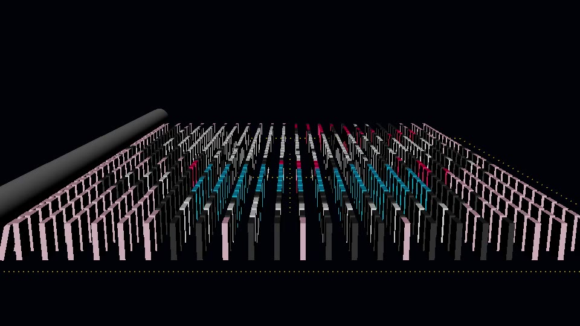
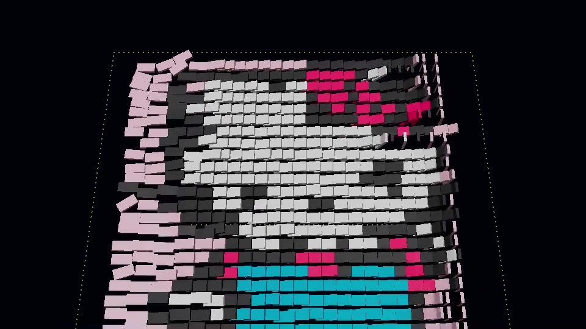
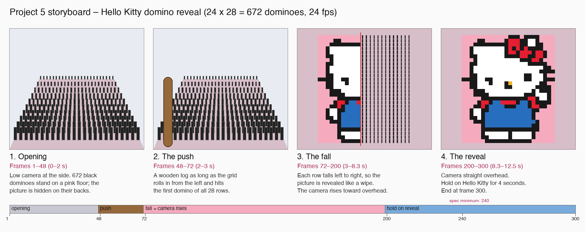

Hello Kitty, one domino at a time.
A Python script for Maya builds a grid of 672 dominoes, each painted one colour. A rolling log knocks over the first column, and the wave runs across all 28 rows. As the dominoes fall, they lie flat and their colours form a picture of Hello Kitty. The camera starts low beside the grid and rises until it looks straight down at the finished picture.
How the reveal unfolds




The picture


I reduced a full-size Hello Kitty picture to 24 × 28 squares with five colours, so every domino gets exactly one colour. 24 × 28 was the smallest grid where her eyes, nose and bow are still clear.
How the script works
- Pick the picture. A file dialog (
fileDialog2) asks for the image. The script reads its width and height, and the grid gets one column per pixel across and one row per pixel down. - Build the dominoes. One thin box is copied into a grid by a MASH network (Distribute node, Grid mode), 4/3 units apart.
- Colour them. A MASH Color node reads the picture through a hidden plane the size of the grid, so each domino takes the colour of its pixel. The Color node comes before Dynamics, so a domino keeps its colour while it falls.
- Add physics. A MASH Dynamics node gives every domino gravity, friction and collisions, on a ground plane. The physics runs at 240 steps per second; at the default 60, the log passed through the first dominoes instead of pushing them.
- Push them. A log as long as the grid is keyed to roll into the first column over 20 frames, then hidden.
- Move the camera. Three camera keys: low in front at frame 1, a little higher at frame 140, straight overhead at frame 270.
- Make the output. A
confirmDialogasks Playblast, Render or Cancel. Playblast saves the video; Render runs the fall, sets up Arnold to show the domino colours, and saves a picture of the last frame.
Everything in the video comes from the script. Running it again builds the same scene from an empty file.
Download the Python scriptExtra credit
File dialog: the picture is chosen with fileDialog2 instead of a fixed path. Cancel stops the script.
Grid from the picture's size: the number of columns and rows comes from the picture's pixel width and height, and the spacing, log, colour plane and camera all scale with it. A 16 × 19 test picture gave a 304-domino grid that also falls completely. A full-size photo is refused with a message, because it would mean hundreds of thousands of dominoes.
Storyboard
